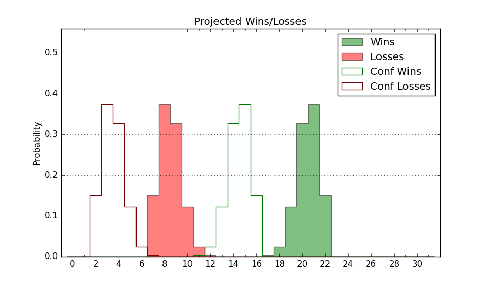

| Home | Game Probabilities | Conferences | Preseason Predictions | Odds Charts | NCAA Tournament |
| City: | Johnson City, Tennessee | |
| Conference: | Southern (1st)
| |
| Record: | 10-2 (Conf) 16-7 (Overall) | |
| Ratings: | Comp.: 6.0 (116th) Net: 6.1 (116th) Off: 112.1 (122nd) Def: 105.9 (121st) SoR: 0.0 (105th) |
| Remaining | ||||||
|---|---|---|---|---|---|---|
| Date | Opponent | Win Prob | Pred. | |||
| 2/11 | Chattanooga (295) | 92.1% | W 80-64 | |||
| 2/14 | Samford (235) | 86.7% | W 79-67 | |||
| 2/18 | @ Furman (189) | 54.7% | W 72-70 | |||
| 2/21 | @ UNC Greensboro (315) | 82.8% | W 81-70 | |||
| 2/25 | Wofford (219) | 84.5% | W 81-69 | |||
| 2/28 | @ Mercer (158) | 48.4% | L 77-78 | |||
| Previous | Game Score | |||||
| Date | Opponent | Win Prob | Result | Off | Def | Net |
| 11/8 | @Presbyterian (264) | 71.7% | L 64-68 | -14.5 | -2.3 | -16.9 |
| 11/12 | Northern Kentucky (209) | 83.0% | W 75-63 | -11.0 | 19.1 | 8.1 |
| 11/15 | @North Alabama (335) | 86.8% | W 78-74 | -5.3 | -3.2 | -8.5 |
| 11/21 | Morehead St. (281) | 91.4% | W 77-62 | -5.2 | 5.6 | 0.4 |
| 11/23 | Louisiana Monroe (351) | 97.2% | W 97-55 | 12.0 | 11.2 | 23.2 |
| 11/29 | Central Arkansas (185) | 79.6% | W 80-57 | -2.1 | 21.3 | 19.1 |
| 12/2 | @Dayton (101) | 30.9% | L 71-88 | -5.1 | -11.9 | -17.0 |
| 12/5 | South Alabama (190) | 80.5% | W 91-65 | 18.0 | 2.7 | 20.7 |
| 12/12 | @Austin Peay (149) | 45.7% | L 75-76 | 1.7 | -4.0 | -2.4 |
| 12/16 | @North Carolina (27) | 6.7% | L 58-77 | -1.2 | -3.6 | -4.8 |
| 12/20 | Jacksonville St. (199) | 81.4% | L 75-81 | 11.6 | -32.0 | -20.4 |
| 12/30 | @The Citadel (346) | 88.7% | W 74-49 | -0.1 | 22.9 | 22.9 |
| 1/3 | Mercer (158) | 76.2% | W 77-71 | 1.2 | 0.5 | 1.7 |
| 1/7 | VMI (356) | 97.8% | W 81-67 | -5.8 | -10.2 | -16.0 |
| 1/10 | UNC Greensboro (315) | 94.3% | W 86-60 | -5.2 | 15.5 | 10.3 |
| 1/14 | @Western Carolina (283) | 76.2% | L 68-72 | -6.7 | -7.6 | -14.3 |
| 1/17 | @Samford (235) | 65.8% | W 76-75 | 16.2 | -16.4 | -0.2 |
| 1/21 | @Chattanooga (295) | 77.3% | W 67-66 | -17.0 | 3.1 | -13.9 |
| 1/23 | The Citadel (346) | 96.4% | W 84-55 | 7.6 | 8.5 | 16.1 |
| 1/29 | Western Carolina (283) | 91.6% | L 88-90 | 8.4 | -31.7 | -23.4 |
| 2/1 | @Wofford (219) | 61.5% | W 86-72 | 21.6 | -1.3 | 20.4 |
| 2/4 | Furman (189) | 80.4% | W 75-71 | -9.0 | 4.1 | -4.9 |
| 2/7 | @VMI (356) | 92.7% | W 87-70 | 0.5 | -2.3 | -1.7 |
| Stats & Trends | |||||
|---|---|---|---|---|---|
| Current | Day | Week | Month | Season | |
| Composite | 6.0 | +0.2 | +0.9 | +0.4 | +7.7 |
| Comp Rank | 116 | +1 | +6 | +2 | +27 |
| Net Efficiency | 6.1 | +0.1 | +0.8 | -0.8 | -- |
| Net Rank | 116 | -2 | +5 | -1 | -- |
| Off Efficiency | 112.1 | +0.3 | +0.8 | +0.1 | -- |
| Off Rank | 122 | +2 | +8 | -7 | -- |
| Def Efficiency | 105.9 | -0.1 | -0.1 | -0.8 | -- |
| Def Rank | 121 | -- | +3 | +6 | -- |
| SoS Rank | 350 | +1 | +8 | -- | -- |
| Exp. Wins | 20.5 | +0.1 | +0.3 | +0.0 | +1.9 |
| Exp. Conf Wins | 14.5 | +0.1 | +0.3 | +0.0 | +2.6 |
| Conf Champ Prob | 93.1 | +2.6 | +38.9 | +20.2 | +68.7 |

| Advanced Stats | ||
|---|---|---|
| Stat | Value | Rank |
| Off Eff FG % | 0.532 | 113 |
| Off Ast Ratio | 0.150 | 163 |
| Off ORB% | 0.272 | 268 |
| Off TO Rate | 0.143 | 147 |
| Off FT Ratio | 0.364 | 160 |
| Def Eff FG % | 0.529 | 237 |
| Def Ast Ratio | 0.160 | 274 |
| Def ORB% | 0.284 | 94 |
| Def TO Rate | 0.173 | 42 |
| Def FT Ratio | 0.329 | 129 |